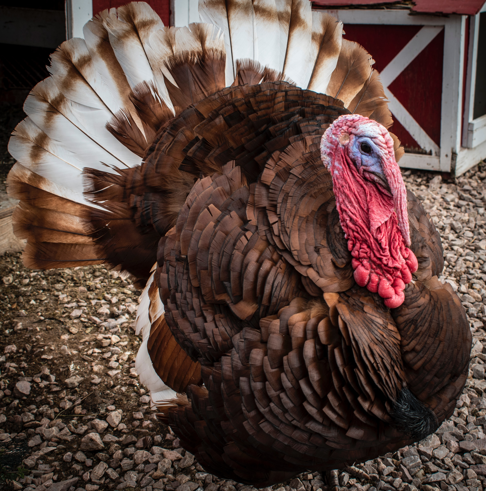
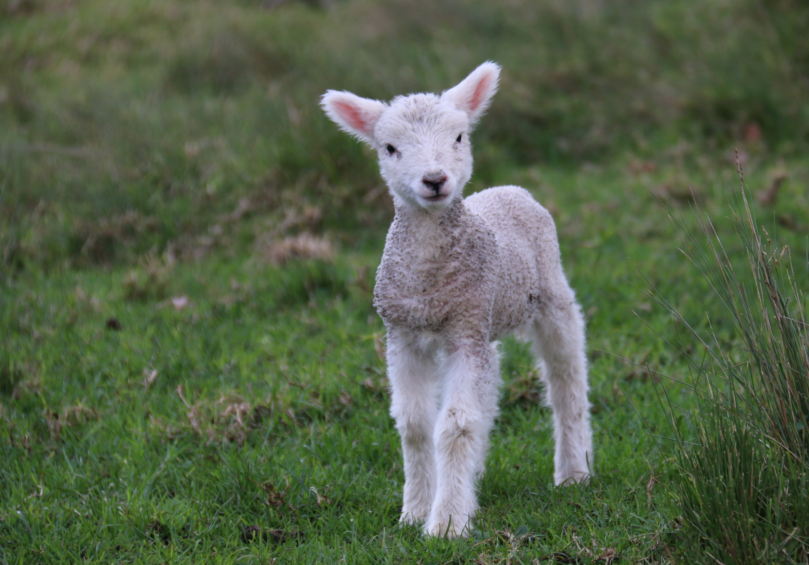
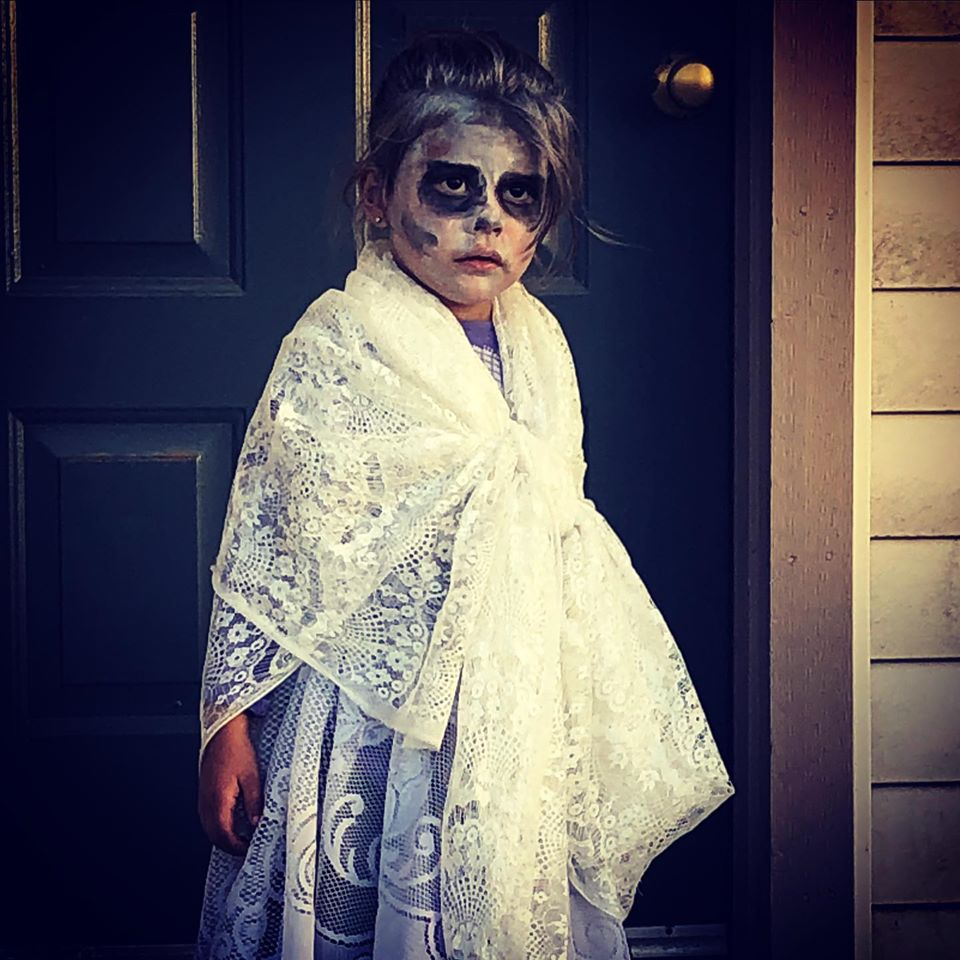

Bird Is The Word
Around 300 B.C., Mayans domesticated the turkey to have roles in religioius rites. They represented power and prestige and were honored as vessels of the gods. Iconography and archaelogy of Maya proudly display the people's love for the bird.

Mary Really Did Have A Lamb
The inspiration behind the children's song is actually true. Mary Sawyer was 11 and living in Boston on that infamous day where she brought a lamb to school with her. The song was made for in 1860's when she helped raised money for a church by selling wool from the lamb.

Parker Riley Claire
The scarest old lady on halloween!!!!